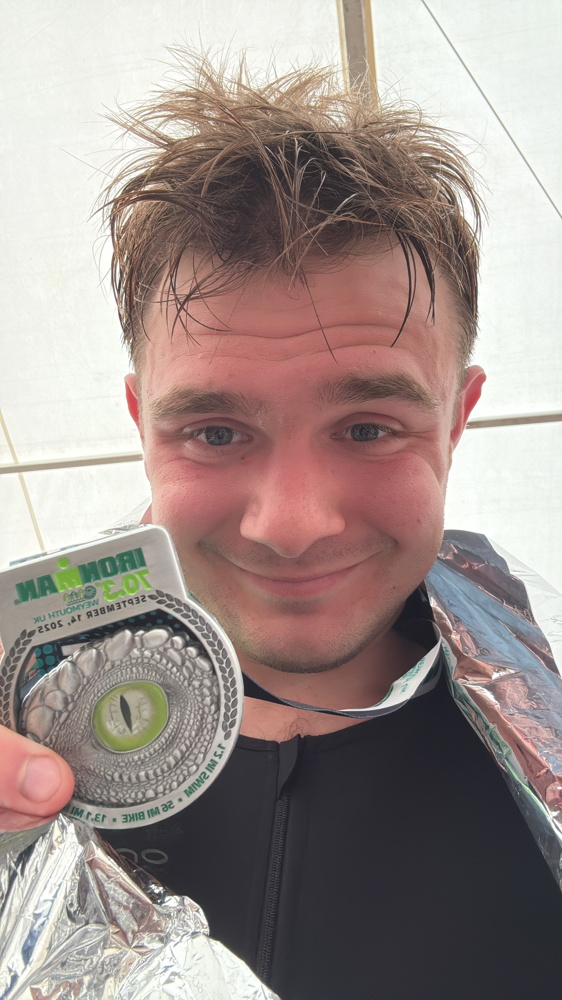
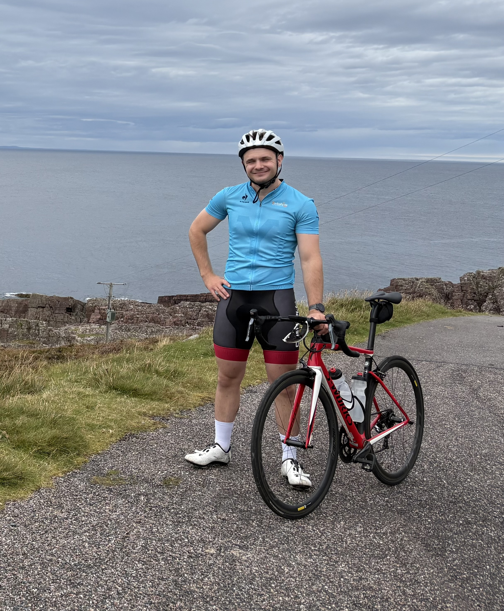
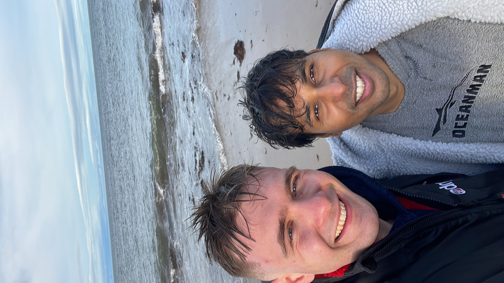
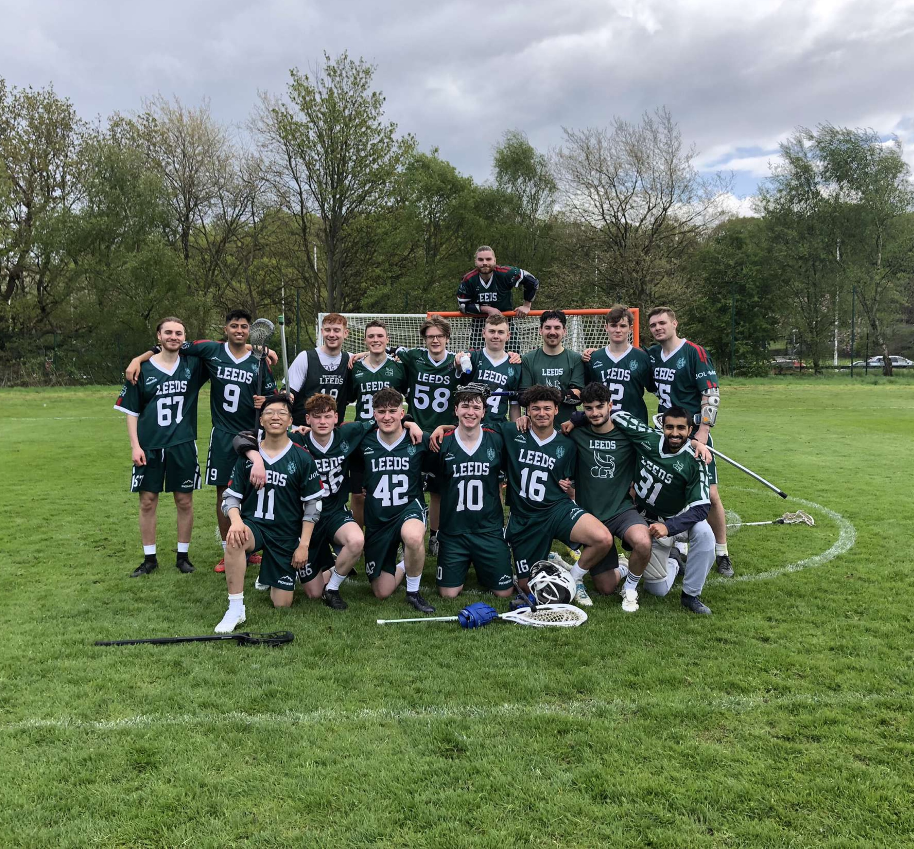
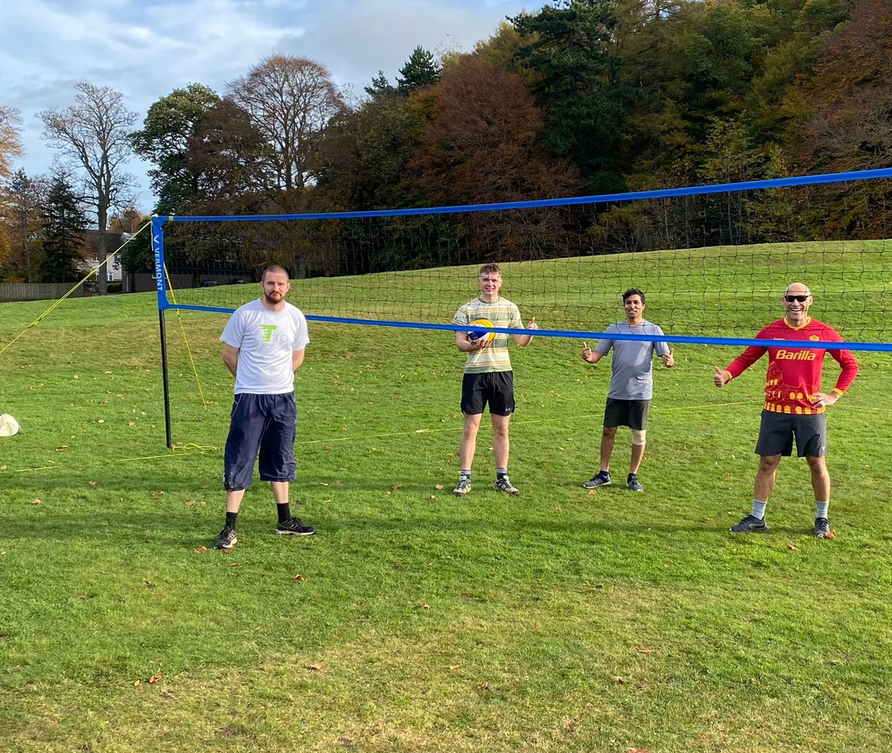
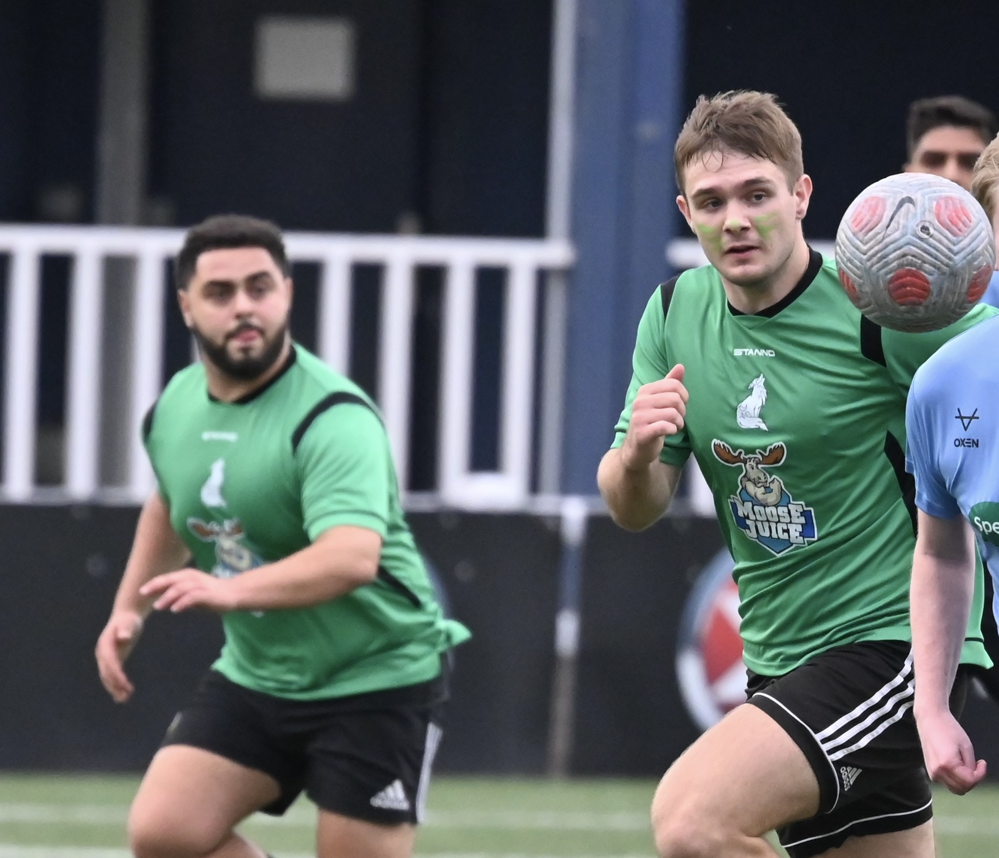
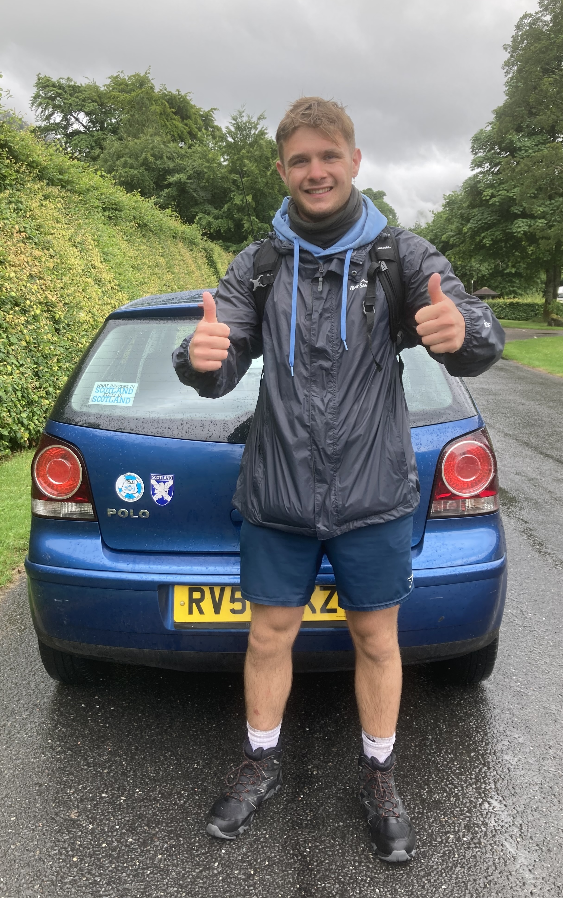
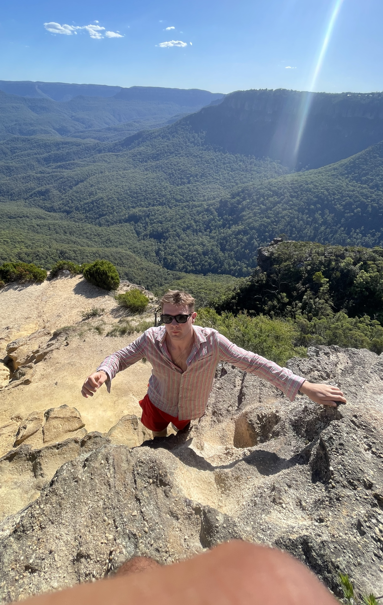
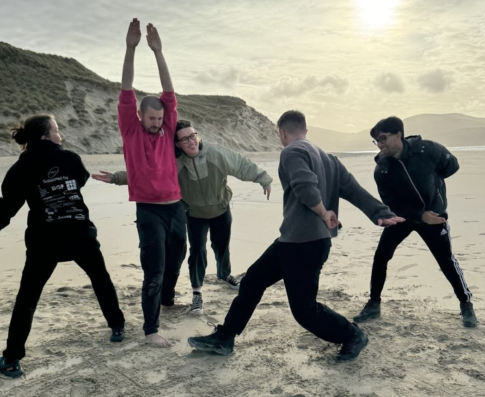

← Home

About
I love working on cool projects with great people. When truly engrossed in a project, my hobbies take a back seat for sure, and I am very comfortable with that. But when there is the chance, I like to slow down and do something that doesn't require much thought.
What I like doing…
Triathlon — pushing myself, enjoying nature, learning new skills (I can't really swim…)



Sports — playing with mates, getting competitive over something that doesn't actually matter


Football — watching and playing. Again, being really passionate about something that doesn't really matter

Being outside — fresh air, a contrast to the standard dingy workshop


